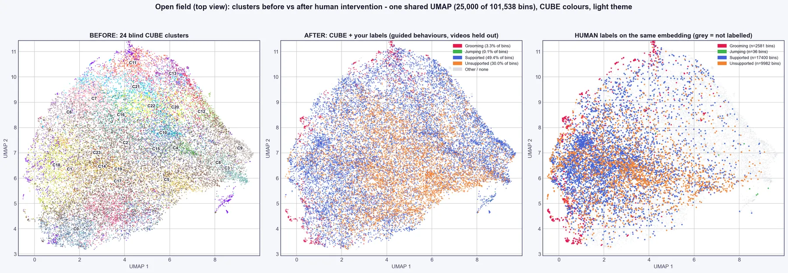
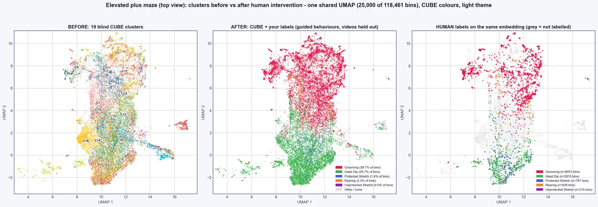

What it is for: CUBE's clusters sometimes do not isolate a behaviour you know well (rare behaviours, or behaviours seen only when the animal turns away). Guided labelling lets you mark examples of your behaviours so the clustering follows them. Nothing changes until you label; a run without labels is identical to a blind run.

Guided labelling is the second tab of the Video Explorer (Step 4).
Steps#
- Finish Step 3 on your data. Open Step 4 and choose the Guided labelling tab (it also opens from any folder inside a run; use "Open a CUBE run" if none is found).
- Add your behaviours (a name and a colour each). Two names are reserved: Background ("none of my behaviours") and Neither.
- Label in either of two ways: (a) play a video, press Start and End, then click the coloured behaviour button (or keys 1 to 9); click a segment and another button to change it later; (b) answer question cards, with one coloured button per behaviour plus Neither, Skip and Stop. Ask about focuses the questions on one behaviour, which helps for a rare one.
- When you have marked every instance of your behaviours in a video, tick This video is fully labelled. The unmarked time then counts as true negatives. This is the only way to measure false positives honestly.
- After each round of questions, the tool reports leakage on your fully labelled videos and says STOP? when it has stopped improving (less than 2 points over 2 rounds). Then label a different animal fully, or add examples of what is not your behaviour.
- Save results writes your labels, the guided behaviour track and an Analyser-ready folder,
CUBE 3b - Guided behaviours(bout lengths,cluster_behaviour_mapping.tsvandbehaviour_groups.json; several clusters of one behaviour are saved as one behaviour group). Produce plots writesplots/guided/(before and after UMAPs, Coverage, Leakage and Ratio before and after, the labelled hierarchy and tables). Closing the annotator asks you to save if labels changed. Rerunning Step 3 applies the labels to the clustering: poorly tracked bins are reclustered separately, your bout lengths and transitions feed the HMM, and your names appear on the hierarchy and trajectory plots.
What to expect. Example results on the public open field and elevated plus maze data, with whole videos held out (Coverage % / Leakage %): elevated plus maze Grooming 99 / 6 and Head Dip 96 / 23, against 50 / 10 and 2 / 59 for CUBE's blind clusters; open field Supported 94 / 15, Unsupported 74 / 17 and Grooming 70 / 8, against 12 / 25, 0 and 0. Behaviours with only a few dozen labelled bins (for example elevated plus maze Unprotected Stretch and open field Jumping) are not learned. After about 7 minutes of simulated labelling (400 clips), elevated plus maze Rearing reached 53 / 20 and Protected Stretch 75 / 38. The before/after plot in the tool is in-sample (a check of how well the clusters now match your labels); held-out accuracy needs labelled videos that were not used for training.

Tips and pitfalls#
- Label several behaviours in the same videos. Behaviours labelled in different videos teach the classifier to recognise the animal instead (the tab warns you).
- Do not rely on the "Neither" answer as a trained class until you have many examples spread over several videos; it is used to check false positives.
- Behaviours that occur together (for example Guarding then Licking) are exported both separately and as a combined "family".
- If your reference labels come from another tool, check their time base. The elevated plus maze and open field example videos are 25 fps, but CUBE bins assume 30 fps (one bin is 0.12 s of label time).
- Close and reopen the annotator after updating CUBE; an old window can drop newer label-file keys when it saves.
- Settings (
guided_*), file layout, method and validation are described in GUIDED_LABELLING_REFERENCE.md.